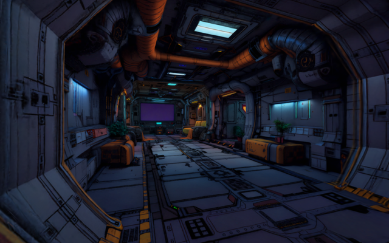
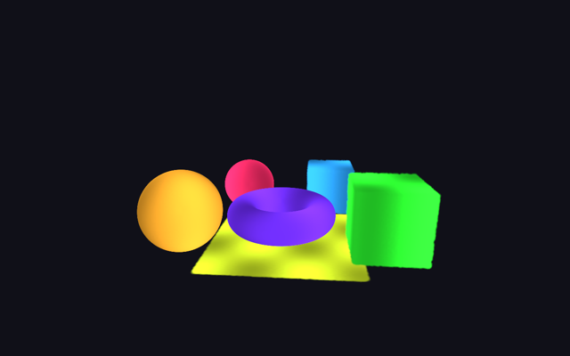
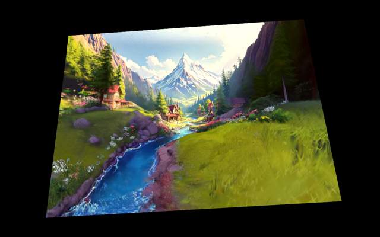
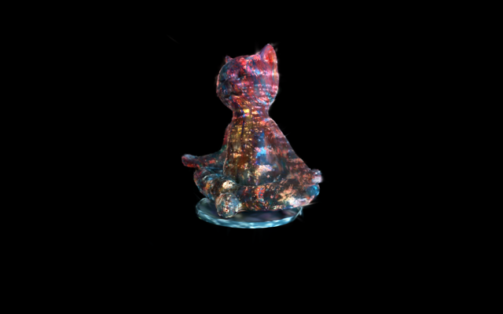

Spark on WebGPU
Demos of the WebGPU backend for Spark, the 3D Gaussian splatting renderer for three.js: relighting, streaming level of detail, per-splat attributes, GPU effects and dyno shaders.
These demos need WebGPU: current Chrome, Edge or Safari 26+. This browser has no WebGPU.
Relightable pawn
1.4M splats that each know how they receive light: switch the HDRI and they are relit live on the GPU.

Streaming level of detail
A 6M-splat scene streamed by pages from one .rad file, with LoD picked per view.

Per-splat attributes
Labels, normals and feature vectors per splat: colour modes, extra targets and GPU picking.

aofx effects
An aofx FxChain of compute effects (grade, blur, corner pin…) over the splat render.

Dyno shader effects
Dyno graphs with WGSL statements animate and recolour every splat on the GPU.